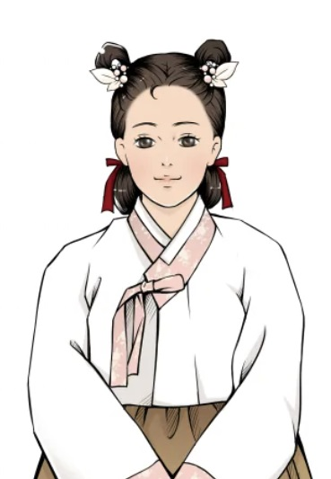
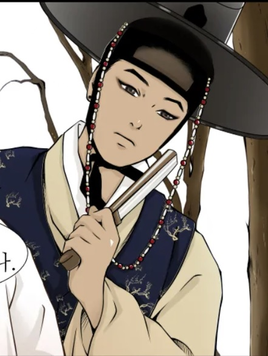
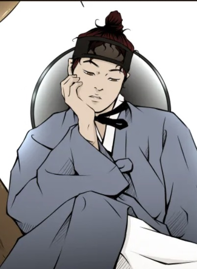
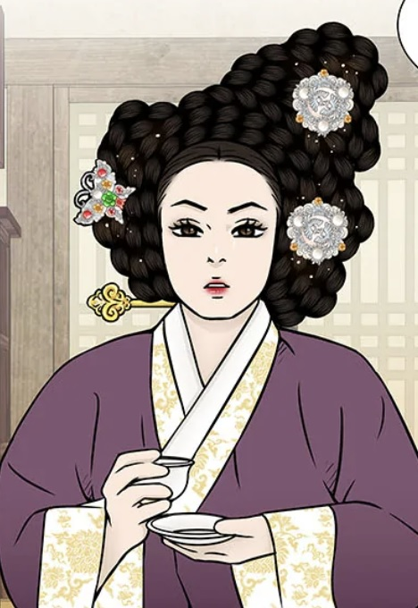

웹툰 <바리공주>는 초보 무당이었던 바리가 점점 무당으로서의 정체성을 확립해나가는 에피소드 형식의 성장 스토리로 잘 알려지지 않은 무속, 신화 그리고 민속의 세계를 보여주는 공포와 호러, 감동과 로맨스가 첨가된 장편 웹툰이다. 조선 초기 무속이 배척당하기 시작하던 시기. 무당들의 조상, 무조신 바리공주가 조선시대 양반집 규수로 환생하였다. 바리공주 남편 무장승은 바리가 무당의 길을 걸어야 함을 알게 되어 신 스승을 자처하며 그녀의 곁을 지킨다. 바리와 무장승은 상단을 운영하는 여우 마님과 음주가무를 좋아하는 도깨비 김선비와 함께 악귀와 악인을 혼내준다. 또 귀천을 떠도는 귀신들의 슬픔과 한을 어루만져주며 갈 곳 잃은 소외된 이들을 위한 이야기를 그려나간다.
| 등장인물 | 설명 |
|---|---|
|  바리 |
웹툰 <바리공주>의 주인공. 오구대왕과 길대부인 사이에서 태어난 막내딸로, 일찍이 버려졌지만 부모님을 구하기 위해 생명수를 구하러 떠난다.무사히 생명수를 구해 와 부모님을 구하지만 저승에서 본 영혼들이 머리 속에서 떠나지 않아 저승으로 돌아가 그 혼들을 달래주는 저승신이 된다.저승에서 무장승과 결혼해 7명의 아들을 낳 았지만, 7명의 아들이 모두 출가한 뒤 연유를 밝히지 않고 삼신 할머니에게 부탁해 환생한다. 후에 말하기를 전생에 이승에서도 부모에게 버려지고 저승에서도 무뚝뚝 한 남편을 만나 가족의 정을 느끼지 못한 것이 한이 되었고, 가족의 정이 통한 후에도무장승을 사랑할지 알고 싶어 환생했다고 한다. 양반집 규수로 환생했지만 어릴 적 부터 귀신이 보여 자신을 찾아 온 무장승을 스스으로 삼고 출가해무당의 길을 걷게 된다. |
|  무장승 |
저승신 바리의 남편이자 지옥을 관장하는 7대 대왕들의 아버지이다. 바리가 생명수를 구하러 저승에 온 순간부터 바리가 여자임을 알아채지만 모르는 척하고 그녀를 시험한다. 생명수를 구하고 떠난 바리가 다시 저승으로 돌아오자 정식으로 혼인하여 일곱 아들을 함께 키운다. 웹툰 상에서 아들들이 무장승에게 투덜대고 편하게 행 동하는 것으로 보아 좋은 아빠인 것 같다. 하지만 무장승 혼자였던 시간이 너무 길어서 아들들이 출가한 뒤 바리를 외롭게 만들었다. 바리가 떠난 뒤에 후회하고, 그러 면서도 이번 생엔 바리가 진심으로 행복하길 바란다. 환생한 바리를 찾아가 스승이 되어 이승에 남은 혼들을 저승으로 보내고 있다. |
|  김선비 |
스스로를 김선비라 칭하며 인간 행세를 하는 도깨비이다. 인간들과 어울려 노는 걸 좋아하지만 친구가 될 수 없어 외로워한다(도깨비와 헤어지면 도깨비를 잊지 때문) 그러다 무장승을 만나고 친구가 되어 바리와 무장승과 함께 지낸다. 철없어 보이긴 하지만 바리와 무장승의 든든한 지원자이다. 저승사자 에피소드에서 저승사자에게 반해 적극적으로 구애하여 연인인 사이가 되었다. 연인인 저승사자와 매우 애틋한 사이이다. |
|  대방마님 |
큰 상단을 이끄는 대상인이다. 원래는 꼬리가 아홉 개 달린 구미호이지만 잘 숨기고 살아간다. 여우마님이라고 하기도 한다. 바리 일행에게 거처를 내주고 도와주는 것으로 보아 따뜻한 마음씨를 가진 인물이다. 대상인이다 보니 아는 사람이 많아 주변에서 이상한 일이 일어나면 바리 일행에게 알려준다. 그녀의 과거는 대방마님 에피소드에서 밝혀진다. |
| 에피소드 | 회차 | 설명 |
|---|---|---|
| 예고 | 예고 | 바리공주 설화 |
| 미명귀 | 1~4 | 결혼한 젊은 여자가 죽어서 되었다는 귀신. 남편의 후처를 괴롭힘 |
| 구렁이 | 5~8 | 구렁이의 가족이 사람에게 맞아 죽고 구렁이는 사람으로 둔갑하여 복수함 |
| 손말명 | 9~11 | 혼기가 찬 처녀가 혼인을 하지 못하고 죽어서 되었다는 귀신. 자신을 겁탈하려는 갖바치를 피해 도망치던 중 낭떠러지에서 떨어져 낙사하여 손말명이 됨 |
| 몽달귀실 | 12 | 혼기가 찬 총각이 혼인을 하지 못하고 죽어서 되었다는 귀신. 생전에 양반집 노비였는데, 주인집 딸을 남몰래 연모하다 억울하게 죽어 몽달귀신이 됨 |
| 사혼제 | 13~15 | 미혼으로 고인이 된 남녀를 위해 사후에 올려주는 혼례. 앞선 에피소드의 손말명과 몽달귀신이 혼인함 |
| 청계 | 16~19 | 광대가 죽어서 된 귀신이나 진짜 죽은 건 아니고, 불치병에 걸려 죽어가던 여동생이 마직막으로 오라버니와 광대 놀이를 하고 싶은 집념이 만든 혼임 |
| 나무귀신 | 20~23 | 어린 나이에 죽었으나 저승으로 못 가고 오래된 나무에 붙어 다른 사람들을 죽게 만드는 악귀가 된 영혼. 나무 귀신의 과거는 에피소드 새타니에 나옴 |
| 잉어와 도령 | 24~27 | 자신을 돌봐주던 은애를 위로하고 싶어 도령으로 둔갑한 잉어 |
| 김선비 | 28~29 | 바리공주와 무장승의 일행 도깨비 김선비의 과거 |
| 새타니 | 30~34 | 죽은 아이의 혼이 무당에게 실린다는 속설로 희생된 아이의 영혼. 나무 귀신의 과거 |
| 가채 | 35~38 | 억울하게 죽은 몸종의 영혼이 마님 가채의 씌인 이야기 |
| 저승사자 | 39~42 | 정식 저승사자가 되기 위해 실습 중인 견습 저승사자 이야기 |
| 무당 | 43~47 | 마을을 지켜주던 무당이 죽은 뒤 마을에 일어나는 일에 대한 이야기 |
| 무덤귀 | 48~51 | 무덤이 훼손되어 나타난 귀신 |
| 저승할망 | 52~55 | 죽은 아이의 영혼을 저승으로 데려가는 여신 |
| 선녀와 나무꾼 | 56~60 | 선녀와 나무꾼 설화를 재해석한 에피소드 |
| 상사귀 | 61~62 | 상사병으로 죽은 귀신 |
| 환생 | 63~68 | 맞아 죽은 고양이가 환생하는 이야기 |
| 경대 | 69~71 | 경대의 붙은 집념들이 전승되는 이야기 |
| 비손 | 72~76 | 두 손을 모아 신에게 비는 의식. 신기가 없는 사람이 하면 위험함 |
| 콩쥐팥쥐 | 77~82 | 콩쥐팥쥐 설화를 바탕으로 한 에피소드 |
| 바리공주와 무장승 | 83 | 바리공주와 무장승 사랑 이야기 |
| 효녀심청 | 84~89 | 효녀 심청 설화를 재해석한 에피소드 |
| 여우 누이 | 90~93 | 여우신에게 기도하여 낳은 딸이 여우가 되면서 일어나는 에피소드 |
| 대방마님 | 94~97 | 대방마님의 과거 이야기 |
| 축신 | 98~100 | 화장실을 지킨다고 알려진 가정신앙의 신. 가정신앙 이야기 |
| 노비 | 101~105 | 차별받는 노비들이 원혼이 되는 이야기 |
| 허주 | 106~110 | 자신이 신이라 주장하는 잡귀 |
| 두억시니 | 111~113 | 사람의 머리를 으깨 죽인다는 귀신. 고려 이후 불교의 야차와 동일시됨 |
| 마마신 | 114~119 | 천연두의 신으로 성격이 사납고 변덕이 많음 |
| 그림족자 | 120~121 | 그림 족자가 관기인 척하고 사람의 정기를 빼았음 |
| 모정 | 122~124 | 모정으로 주인을 지키는 강아지 |
| 김현감호 | 125~129 | 신라신대 호랑이 설화를 새로 각색한 이야기 |
| 비방 | 130~134 | 무당 개개인의 공개되지 않은 특별한 무속 행위 |
| 방물장수 | 135~138 | 보자기에 물건을 담아 돌아다니며 장사하는 행상 이야기 |
| 산신각 | 139~142 | 산을 모시는 사찰 안의 전각 |
| 귀태 | 143~150 | 귀신의 아이를 사람이 임신한 것 |
| 신의 벌전 | 151~158 | 무당이 해선 안될 짓을 하여 신의 벌을 받는 것 |
웹툰 <바리공주>는 서사무가 <바리공주>의 스핀오프 작이다. 웹툰은 예고편에서 원전을 압축적으로 제시하는데, 이는 웹툰의 전반적인 서사 이해를 위한 기초지식으로 기능한다. 바리가 무조신이 되는 원전의 종료 지점을 웹툰은 시작점으로 삼고 있기 때문이다.
이후 이야기는 웹툰 작가가 원전을 과거로써 재해석하고 새로운 이야기를 창작해 진행된다. 이 과정은 ‘고전’ 텍스트를 현대적 관점에서 재창작하는 것으로 당시와 현대의 시대적 간극을 메우는 것이다. 작가는 로맨스 등의 형식을 차용해 젠더 감수성과 가부장 이데올로기를 극복하려고 시도했다. 예를 들어 원전에서 무장승은 바리에게 고난을 부여하는 인물로서 바리가 효를 위해 어쩔 수 없이 그와의 결합을 받아들이는 반면, 웹툰에서는 연인으로 표현된다. 부모의 사랑을 받지 못한 바리와, 저승에서 오랜 시간을 홀로 지낸 무장승이 서로의 ‘외로움’을 보듬으며 발전했다는 설정이다. 또 원전에서는 바리가 구약여행을 선택하기까지의 과정을 ‘효’의 입장에서 당연하게 서술했으나, 웹툰에서는 착한 아이여야만 했던 바리가 부모와 언니들의 강요로 어쩔 수 없이 떠난다고 설정했다.
웹툰 <바리공주>는 단위 서사가 독립적, 다선적, 중측적으로 연결되는 옴니버스 구성을 취하되, 바리의 성장담과 로맨스를 통해 개별서사를 통합하는 서사적 장치를 활용한다. 단위 서사는 한국 전통 문화, 민간 신앙, 무속과 관련한 주제를 담고 있다.
이야기의 전체 흐름, 즉 개별적으로 진행되는 단위 서사들을 아우르는 서사는 ‘무조신 바리의 성장담’과 ‘무장승과의 로맨스’다. 작중에서 바리는 전국을 떠돌면서 여러 귀신을 천도한다. 이는 바리가 무조신으로서의 권능과 역량을 키워가는 과정이다. 로맨스 상대인 무장승은 동행자로서 이 여행을 함께 한다. 웹툰에서 바리와 무장승은 만남-이별-재회-동행, 전생-후생, 과거 회상-현실의 다양한 관계 변화를 겪으며 로맨스 장르의 정체성을 유지한다.